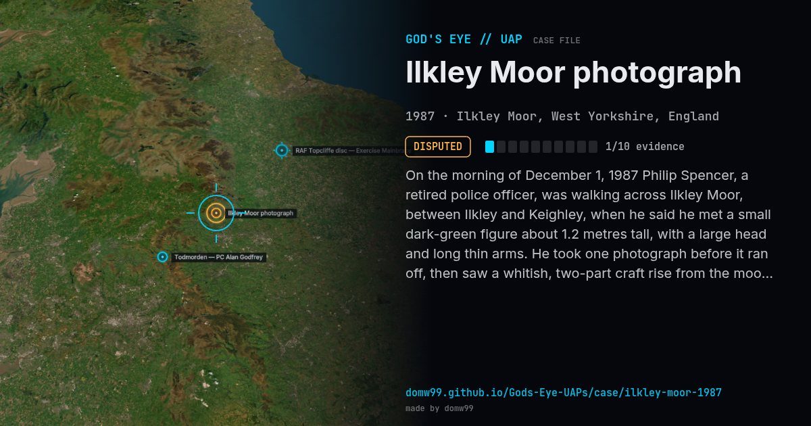

Ilkley Moor photograph

On the morning of December 1, 1987 Philip Spencer, a retired police officer, was walking across Ilkley Moor, between Ilkley and Keighley, when he said he met a small dark-green figure about 1.2 metres tall, with a large head and long thin arms. He took one photograph before it ran off, then saw a whitish, two-part craft rise from the moor with a loud hum. About two hours were missing from his journey, and his compass pointed the wrong way. A wildlife photographer said the figure matched no known animal and Kodak found no signs of tampering, but the US Navy optics specialist Bruce Maccabee called the image too grainy to test. Under hypnosis in March 1988 his story changed to one of being taken aboard and examined.
Explanation
Critics say the blurry photograph could show a person or a cardboard cutout, and ask why no picture of the craft was taken. Kodak experts found no sign of tampering, but the image is too grainy for firm conclusions, and the account changed under hypnosis.
What was seen
Shape: Small green humanoid; two-part silver craft
Witnesses: Philip Spencer, a retired police officer (a pseudonym)
Duration: Minutes; about two hours unaccounted for